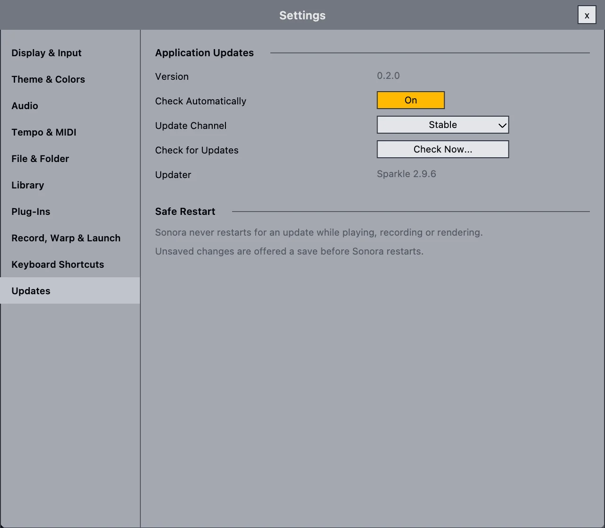

Get Sonora.
Free and open source, with no account and no time limit.
Pick the file for your computer below.
Alpha Expect bugs. Read this first.
Please read this before you download.
- It will have bugs. Sonora is very early. Expect missing pieces and things that change between versions.
- Protect your work. Save often, keep backups, and don't use Sonora as the only home for a project you care about.
- Not for deadlines yet. If you need a dependable studio for paid work, use a mature DAW for now.
- Tell us what breaks. That's how Sonora gets better. How to report a bug.
Pick your system
These links always fetch the latest release. Older versions and the .sha256 checksums are on GitHub Releases, next to the source code.
Sonora for Mac
The main version. Open the disk image and drag Sonora to Applications. Updates itself from then on.
Sonora-macOS.dmg
Download for MacSonora for Windows
An early build, much less tested than the Mac version. No automatic updates yet, and Windows will warn about an unknown publisher.
Sonora-Windows-x64-setup.exe
Download for WindowsAlpha builds may not be signed by Apple or Microsoft yet. If macOS says it can't check the app, Control-click Sonora in Applications and choose Open. Only download Sonora from this site or from its GitHub repository.
Sonora Prism for other DAWs
Prism is already inside Sonora. If you also want it in another music program, install the VST3 plug-in.
Sonora Prism plug-in
A powerful wavetable synth as a VST3 plug-in. Installs for all users or just for you, then rescan plug-ins in your host.
Sonora-Prism-VST3-macOS.pkg
Download the plug-inSonora is free. If it helps you, buy me a coffee.
Hosting, collaboration servers, AI tools and a lot of evenings go into every release. Support is always optional. Where it goes.
What you need
Mac
Apple silicon (M1 or later) with macOS 13 Ventura or later. Intel Macs aren't supported.
Plug-ins
VST3 or Audio Units plug-ins for Apple silicon. VST2 and Intel-only plug-ins don't load.
Collaboration
Works on your local network. Sessions over the internet need a relay server you host yourself, for now.
Assistant (optional)
An API key from an AI provider you choose. Everything else works without one.
Updates that wait for the music.
On the Mac, Sonora updates itself with Sparkle, the open-source updater many Mac apps use. Updates are hosted on GitHub Releases.
- Small downloads. Delta updates download only what changed since your version. If a delta is missing or doesn't apply, Sonora downloads the full update instead.
- Never mid-take. Sonora won't restart for an update while it's playing, recording or exporting.
- Your work first. With unsaved changes, you get Save, Don't Save or Cancel before the restart.
- Signed and verified. Sonora checks every update's signature before it unpacks anything.
- Your choice. Turn off automatic checks and use Help › Check for Updates whenever you like. Nothing installs without your click.
Windows and Linux: download new versions from GitHub Releases by hand for now. Builds you make from source don't update themselves.

Pick how new you want it.
| Channel | Who it's for | How to get it |
|---|---|---|
| Stable | Everyone. Even "stable" is alpha software for now. | The default |
| Beta | People who want new features first and are happy to report problems. | Settings › Updates › Update Channel |
| Nightly | Testers and contributors. | A separate app, "Sonora Nightly", with its own settings and plug-in cache. It never touches your regular install. |
Build it yourself.
You need an Apple silicon Mac with the Xcode command line tools and Homebrew. The bootstrap script fetches JUCE and the graphics library, and installs CMake and Ninja if they're missing.
Linux x64 builds in Docker with ci/linux/run.sh all. See docs/PLATFORMS.md.
git clone https://github.com/lordillusions/sonora.git
cd sonora
scripts/bootstrap.sh
cmake -S . -B build-release -G Ninja -DCMAKE_BUILD_TYPE=Release
cmake --build build-release
open build-release/src/Sonora_artefacts/Release/Sonora.app